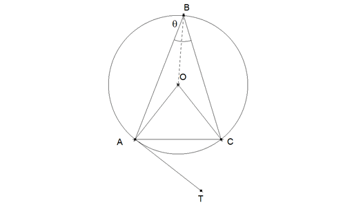
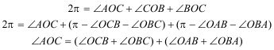
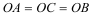
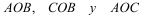
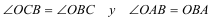
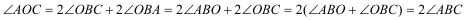
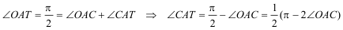
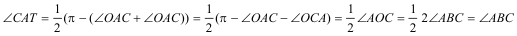

Problema 278
Dado el triángulo ABC, construyamos su circunferencia circunscrita. Tracemos la recta tangente AT a la circunferencia por el punto A.
Demostrar que <ABC = <CAT, o <ABC + <CAT=180. Harel, G. y Sowder, L.(1998): Students' proof schemes: results from exploratory studies. En Schoenfeld,et all edrs. Research in Collegiate Mathematics Education. III, American Mathematical Society y Mathematical Association of America. (p. 260) Solución de José María Pedret, Ingeniero Naval. Esplugues de Llobregat (Barcelona). (1 de noviembre de 2005) |
|
SOLUCIÓN |
|
Suponemos que no conocemos nada sobre ángulos inscritos en un círculo. Demostramos que el ángulo en el centro es el doble del ángulo inscrito. Acto seguido demostramos lo pedido en el enunciado
 figura 1
En el centro O del círculo se cumple
 Pero por ser radios de un mismo círculo
 Luego son isósceles los triángulos

Y de aquí
 Y sustituyendo

Por lo tanto, el ángulo en el centro es el doble del ángulo inscrito
Como AT es la tangente en A
 Pero al ser AOC isósceles

Por lo tanto, el ángulo entre la cuerda y la tangente es igual al ángulo inscrito
|